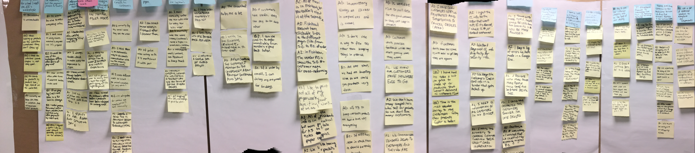
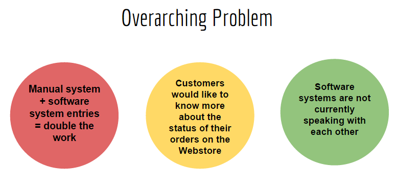

CONTEXTUAL INQUIRY PROJECT: NEW EAGLE
Role -
User experience researcher
Overview
 Process followed:
Process followed:

Conducted contextual inquiry and created an affinity wall to study and
find out the gaps in the order fulfilment process of New Eagle.
Who is New Eagle?
New Eagle is a mechatronics control systems solutions
expert that helps a customer take his or her idea to prototype phase or to the market in the quickest way possible.
Initial Meeting – To get a sense of our client’s domain and the problem
they are facing. The biggest challenge for New Eagle was that too many of their processes on the operations side were
manual and the systems weren’t speaking to each other.
We identified key stakeholders, did interviews in contextual inquiry style while interpreting them side by side,
did background research and constructed an affinity wall. We found 5 main issues:
1. Manual process
2. Paper versus paperless
3. Niche business keeps customers
4. Customers uncertainty of the order status
5. Customers options in regards to payment on website are limited

Iteration – The key themes were discussed with our client contact to find out
the most problematic area which when solved will help them the most. 3 key themes emerged from this phase..

Recommendations:
After brainstorming, we came up with 2 short term/low impact and and 1 long term/high impact solutions.
1. Going paperless (Short term/low impact) – Using LilyPad, a plugin for Fishbowl, the order fulfilment
software currently in place, which extend its capabilities to other devices like tablets, smartphones etc.
2. Improving the webstore (Short term/low impact) – Adding more payment options for the client apart from the
existing credit card payment only. Showing prices to customers but showing discounted prices to premium customers.
3. Implementing a CRM (long term/high impact) – Implementing an ERP (Enterprise resource planning) system like
BizSlate which integrates with their existing accounting software and helps in managing inventory and orders.
Did it work?
Our recommendations were highly appreciated and appraised by the entire operations team of new Eagle.
Out of the 3 recommendations we recommended, 2 of them are currently being implemented.
Learnings from the process:
1. In interviews people try to appear ideal. So it is very important to listen to the things people are not saying.
2. After developing interview protocol, conduct an interview to find out whether it works. This makes the future
interviews much more valuable.
3. Always back your recommendations with substantial amount of data, otherwise there are high chances of them being ignored.
4. Involve the user and keep on checking with him about your findings to make sure you are on the right track.